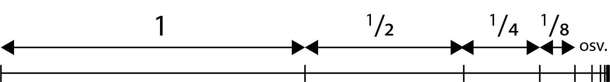

Følger og rekker
Følge (tallfølge): En ordnet liste med tall, f.eks.
\[
1, 3, 6, 10, 15, \ldots
\]
Element: Verdiene i en følge.
I følgen over er første element \(a_1 = 1\), andre element \(a_2 = 3\), osv.
Rekursiv formel: Formel hvor vi bruker det foregående leddet.
I følgen over er hvert ledd det foregående pluss leddnr.,
\[
a_n = a_{n-1} + n
\]
Vi sjekker at formelen er riktig for ledd nr. 2 og 3:
\[
\begin{aligned}
a_2 &= a_{2-1} + 2 = a_1 + 2 = 1 + 2 = 3 \\
a_3 &= a_{3-1} + 3 = a_2 + 3 = 3 + 3 = 6
\end{aligned}
\]
Eksplisitt formel: Formel hvor vi ikke bruker det foregående leddet.
I følgen over er hvert ledd gitt ved
\[
a_n = \frac{n\cdot(n+1)}{2}
\]
Vi kan se at formelen er riktig for de tre første leddene:
\[
\begin{aligned}
a_1 &= \frac{1\cdot(1+1)}{2} = \frac{2}{2} = 1 \\
a_2 &= \frac{2\cdot(2+1)}{2} = \frac{6}{2} = 3 \\
a_3 &= \frac{3\cdot(3+1)}{2} = \frac{12}{2} = 6
\end{aligned}
\]
Rekke: Summen av en følge. Vi bruker
summasjonstegnet:
\[
S_n = \sum_{i=1}^{n} a_i = a_1 + a_2 + a_3 + \cdots + a_n
\]
Python-program for å bestemme summen av en følge:
a = 1 # Første ledd
S = a # Startverdi for summen
N = 10 # Antall ledd
for n in range(2, N+1):
a = a + n # Den rekursive sammenhengen
S = S + a # Summen øker
print(S)
Bevis
Partall og oddetall
Partall kan skrives som \(2k\), hvor \(k\) er et heltall.
Oddetall kan skrives som \(2k + 1\), hvor \(k\) er et heltall.
Eksempel
Påstand: Hvis \(n\) er et partall, så er \(n^2\) et partall.
BEVIS:
\[
n^2 = (2k)^2 = 2^2\cdot k^2
= 2\cdot(2k^2)
= 2\cdot \text{heltall}
\]
Q.E.D.
Beviset ovenfor er et direkte bevis.
I et kontrapositivt bevis bruker vi at
\[
A \Rightarrow B
\quad \text{er ekvivalent med} \quad
\text{ikke }B \Rightarrow \text{ikke }A
\]
"Du bader" \(\Rightarrow\) "Du er våt" betyr at
"Du er ikke våt" \(\Rightarrow\) "Du bader ikke".
Eksempel
Påstand: Hvis \(n^2\) er et partall, så er \(n\) et partall.
BEVIS:
Hvis \(n\) ikke er et partall:
\[
n^2 = (2k+1)^2
= 4k^2 + 4k + 1
= 2\cdot(2k^2+2k)+1
= \text{oddetall}
\]
Altså: \(n\) er ikke partall \(\Rightarrow\) \(n^2\) er ikke partall.
Dette betyr at: \(n^2\) er partall \(\Rightarrow\) \(n\) er partall.
Q.E.D.
Merk:
Det er vanlig å skrive Q.E.D. på slutten av bevis.
Dette er en forkortelse for det latinske uttrykket
"quod erat demonstrandum", som betyr
"hvilket var det som skulle bevises".
Vi vil ofte bevise formelen for rekker. For å være ganske sikker på at en
formel er riktig, kan vi sjekke den for mange ledd, men vi kan ikke være
helt sikre på at formelen er gyldig for uendelig mange ledd.
Eksempel
Summen av de \(n\) første partallene er gitt ved
\[
2 + 4 + 6 + \cdots + 2n = n^2 + n
\]
Vi kan undersøke om formelen ser ut til å være riktig:
\[
\begin{aligned}
&\text{Når } n = 1:\quad 2 = 1^2 + 1 = 1 \\
&\text{Når } n = 2:\quad 2 + 4 = 2^2 + 2 = 6 \\
&\text{Når } n = 3:\quad 2 + 4 + 6 = 3^2 + 3 = 12 \\
&\text{Når } n = 4:\quad 2 + 4 + 6 + 8 = 4^2 + 4 = 20
\end{aligned}
\]
Formelen ser ut til å være riktig, men vi kan ikke være
helt sikre!
Induksjonsbevis for summen av rekker
- Vise at \(S_1\) er riktig
- Vise at \(S_n = S_{n-1} + a_n\)
Eksempel
Vi beviser formelen i forrige eksempel:
-
Formelen er riktig for det første leddet:
\[
S_1 = 1^2 + 1 = 1 + 1 = 2
\]
-
Dersom \(S_{n-1}\) er riktig, får vi
\[
\begin{aligned}
S_n &= S_{n-1} + a_n \\
&= (n-1)^2 + (n-1) + 2n \\
&= n^2 - 2n + 1 + n - 1 + 2n \\
&= n^2 + n
\end{aligned}
\]
Steg 1 viser at \(S_1\) er riktig.
Steg 2 viser at formelen er riktig for \(S_n\) når den er riktig for
\(S_{n-1}\).
Dermed er formelen riktig for alle verdier av \(n\).
Q.E.D.
Induksjonsbevis for ledd i følger
- Vise at \(a_1\) er riktig
-
Vise at dersom \(a_{n-1}\) er riktig, vil det føre til at \(a_n\) er riktig
Eksempel
Påstand: For den rekursive følgen med \(a_1 = 1\) og
\(a_n = a_{n-1} + n\), så er ledd nummer \(n\) gitt ved
\[
a_n = \frac{n(n+1)}{2}
\]
BEVIS:
-
Formelen er riktig for \(a_1\):
\[
a_1 = \frac{1\cdot(1+1)}{2}
= \frac{1\cdot 2}{2}
= 1
\]
-
Dersom \(a_{n-1}\) er riktig, får vi
\[
\begin{aligned}
a_n &= a_{n-1} + n \\
&= \frac{(n-1)((n-1)+1)}{2} + n \\
&= \frac{(n-1)n + 2n}{2} \\
&= \frac{n(n+1)}{2}
\end{aligned}
\]
Steg 1 viser at \(a_1\) er riktig.
Steg 2 viser at formelen for \(a_n\) er riktig hvis \(a_{n-1}\) er riktig.
Dermed er formelen riktig for alle verdier av \(n\).
Q.E.D.
Aritmetiske og geometriske rekker
Aritmetisk følge og rekke
I en aritmetisk følge er det en fast differanse \(d\) mellom hvert element.
\[
a_n = a_{n-1} + d
\]
Summen av de \(n\) første leddene i en aritmetisk rekke er gitt ved
\[
S_n = \frac{n\cdot(a_1+a_n)}{2}
\]
Eksempel
Bestem summen
\[
2 + 5 + 8 + 11 + 14 + 17
\]
Løsning
Vi kan bestemme summen direkte,
\[
2 + 5 + 8 + 11 + 14 + 17 = 57
\]
eller ved hjelp av formelen
\[
S_6 = \frac{6\cdot(2+17)}{2}
= \frac{6\cdot 19}{2}
= 3\cdot 19
= 57
\]
Vi kan ganske enkelt forstå summe-formelen for en aritmetisk rekke ved hjelp av
illustrasjonen nedenfor:

Geometrisk følge og rekke
I en geometrisk følge er det et fast forhold (kvotient) \(k\) mellom et
element og det foregående elementet.
\[
a_n = a_{n-1}\cdot k
\]
Summen av de \(n\) første leddene i en geometrisk rekke er gitt ved
\[
S_n = a_1\cdot \frac{k^n-1}{k-1}
\]
Eksempel
Bestem summen
\[
2 + 6 + 18 + 54
\]
Løsning
Vi kan bestemme summen direkte,
\[
2 + 6 + 18 + 54 = 80
\]
eller ved hjelp av formelen
\[
S_4 = 2\cdot \frac{3^4-1}{3-1}
= 2\cdot \frac{80}{2}
= 80
\]
Uendelige rekker
Konvergent rekke
Vi sier at en rekke er konvergent dersom summen av uendelig mange ledd
i rekka går (konvergerer) mot et bestemt tall.
Hvis ikke rekka konvergerer, sier vi at den divergerer.
Eksempel
Hva er den uendelige summen
\(1 + \frac{1}{2} + \frac{1}{4} + \frac{1}{8} + \cdots\)?
Løsning
Vi kan tenke oss at vi først går 1 meter mot høyre, deretter 1/2 meter,
deretter 1/4 meter, osv. Vi går da hele tiden halvveis fram til
2 meter totalt, men kommer aldri helt fram.

Rekka konvergerer mot 2.
Uendelig konvergent geometrisk rekke
En geometrisk rekke er konvergent dersom
\[
-1 < k < 1
\]
og summen er da
\[
S = a_1\cdot \frac{k^{\infty}-1}{k-1}
= \frac{a_1}{1-k}
\]
Eksempel
Vi finner summen
\(1 + \frac{1}{2} + \frac{1}{4} + \cdots\)
med formelen:
\[
S = \frac{a_1}{1-k}
= \frac{1}{1-\frac{1}{2}}
= \frac{1}{\frac{1}{2}}
= 2
\]
Eksempel
\[
3 + 12x + 48x^2 + \cdots
\]
Konvergensområdet til rekka er
\[
-1 < k < 1
\]
\[
-1 < 4x < 1
\]
\[
-\frac{1}{4} < x < \frac{1}{4}
\]
Eksempel
Løs likningen
\(3 + 12x + 48x^2 + \cdots = 1\).
Løsning
\[
\begin{aligned}
\frac{a_1}{1-k}
= \frac{3}{1-4x} &= 1 \\
3 &= 1 - 4x \\
x &= -\frac{1}{2}
\end{aligned}
\]
Men konvergensområdet er
\(-\frac{1}{4} < x < \frac{1}{4}\),
så likningen har
ingen løsning.
Summen blir altså ikke 1 for noen verdi av \(x\).
Eksempel
\[
3 + 12x + 48x^2 + \cdots
\]
For hvilke verdier av \(b\) har likningen \(S(x) = b\) løsninger?
Løsning
Spørsmålet er egentlig:
Hvilke verdier kan summen \(S(x)\) ha?
Vi kan skrive rekka som
\[
3\cdot\left(1 + 4x + (4x)^2 + \cdots\right)
=
3\cdot\left(1+k+k^2+\cdots\right)
\]
Summen er da
\[
S = \frac{3}{1-k}
\quad \text{hvor} \quad -1 < k < 1
\]
Grensene \(k \rightarrow \pm 1\) gir at \(b \in \left\langle \frac{3}{2}, \rightarrow \right\rangle\).
Praktiske anvendelser av rekker
Eksempel
Ole setter hver måned inn 1000 kr på en sparekonto med en månedlig
rentefot på 0,5 %.
Hvor mye står på kontoen etter 10 måneder?
Løsning
Beløpet fra første måned har vokst til
\(1000\cdot 1{,}005^{10}\).
Beløpet fra andre måned har vokst til
\(1000\cdot 1{,}005^9\).
Beløpet fra tredje måned har vokst til
\(1000\cdot 1{,}005^8\).
\[
\vdots
\]
Det totale beløpet er
\[
1000\cdot 1{,}005^{10}
+ 1000\cdot 1{,}005^9
+ \cdots
+ 1000\cdot 1{,}005
+ 1000
\]
Dette er en geometrisk rekke med summen
\[
S = a_1\cdot \frac{k^{11}-1}{k-1}
=
1000\cdot \frac{1{,}005^{11}-1}{1{,}005-1}
=
11\,279 \text{ kr}
\]
Eksempel
En pasient får 10 mg av en type medisin hver time.
Hver time forsvinner 50 % av medisinen ut av kroppen på pasienten.
Hvor mye medisin er i kroppen etter lang tid?
Løsning
Etter lang tid har pasienten 10 mg han akkurat har tatt,
\(10\cdot 0{,}50\) mg han tok for én time siden, osv.
Totalt blir dette
\[
10 + 10\cdot 0{,}50 + 10\cdot 0{,}50^2+ \cdots = \frac{a_1}{1-k} = \frac{10}{1-0{,}50} = 20 \text{ mg}
\]
NB:
Det går ofte raskest å bruke formler når vi jobber med praktiske oppgaver,
slik som i eksemplene ovenfor. Men noen ganger kan det være hensiktsmessig
å bruke Excel eller programmering, så ha Excel og Python i bakhodet når du
løser oppgaver.